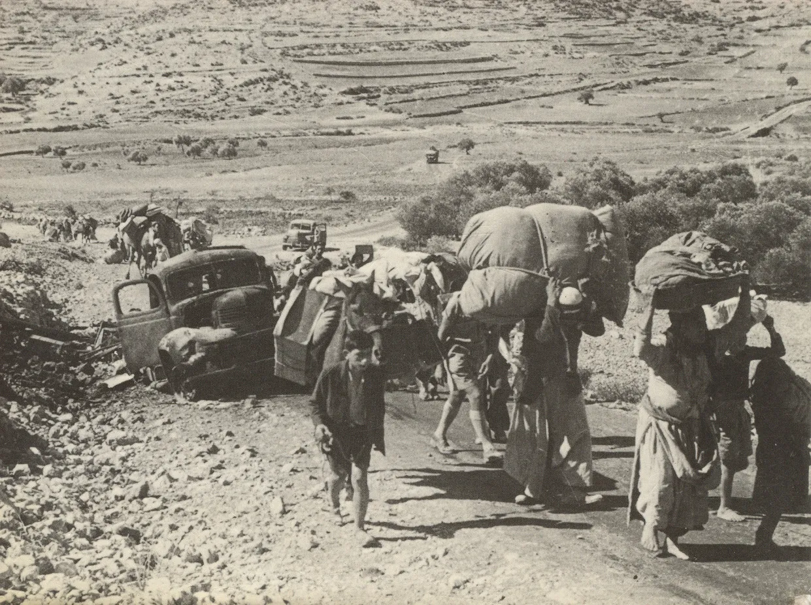

A running count of reported fatalities in Gaza, the West Bank, and Israel.
Totals differ by source; all figures are reported as killed, not injured.
Drawn from the Gaza Ministry of Health, UN OCHA, B’Tselem, and The Lancet.
Every Life Is a Universe
Updated · Day 1,084 of the war
On October 7, 2023, Hamas-led fighters broke through the fence around Gaza and attacked towns, kibbutzim, army posts and a music festival in southern Israel.
They killed 1,195 people, most of them civilians, and took 251 hostages.
Israel’s war on Gaza began the same day.
Fires detected in infrared. Satellite view of the Gaza Strip and southern Israel, October 7, 2023. Contains modified Copernicus Sentinel data (2023), processed by Pierre Markuse, via Wikimedia Commons, CC BY 2.0.
Palestinians killed in GazaRecorded by the Gaza Ministry of Health in the 1,084 days since October 7, 2023, as of .
20,179 children · 12,500 womenTo October 7, 2025, when the Ministry last broke its count down by age and sex.
175,030 injuredThe Ministry itself states thousands of dead remain under rubble.
73,928 Palestinians killed in Gaza, according to the Gaza Ministry of Health.
Each dot is ten people killed in Gaza.
20,179 were children.
To October 7, 2025, the Ministry’s last breakdown by age.
12,500 were women.
Of the dead identified by name, 30% were children.


Jerusalem, 1936: Matson Collection, Library of Congress. Allenby Bridge, 1967: UNRWA Archive. Gaza, 1987: Efi Sharir, CC BY 4.0. Washington, 1993: Vince Musi / The White House. All via Wikimedia Commons; others public domain.
The hundred years’ war
The numbers above begin in 2023. The Palestinian American historian Rashid Khalidi argues that the story begins in 1917, and that it is best understood not as an ancient feud between two peoples but as a colonial war waged against the Palestinians, backed at every stage by the great power of the day.
In The Hundred Years’ War on Palestine (2020), Khalidi divides that century into six “declarations of war.” What follows summarizes his account in our own words.

The Balfour Declaration, November 2, 1917. UK Government, via Wikimedia Commons, public domain.
1917 – 1939 · The first declaration
A national home, promised by a great power
In November 1917, Britain promised the Zionist movement “a national home for the Jewish people” in Palestine, a country its armies had not yet finished conquering, where Arabs were roughly nine in ten of the population.

Palestinian refugees leaving Galilee for Lebanon, October–November 1948. Fred Csasznik, via Wikimedia Commons, public domain.
1947 – 1948 · The second declaration
Partition, and al-Nakba
In November 1947 the United Nations voted to partition Palestine, allotting more than half the land to a Jewish state when Jews were about a third of the population. What followed Palestinians call al-Nakba, “the catastrophe.”
Palestinian refugees cross the wrecked Allenby Bridge into Jordan, 1967. UNRWA Archive, via Wikimedia Commons, public domain.
1967 · The third declaration
Occupation
In six days in June 1967, Israel took the West Bank, East Jerusalem and Gaza, along with Egypt’s Sinai and Syria’s Golan Heights. Hundreds of thousands of Palestinians were displaced, many of them refugees for the second time. The occupation that began that week has never ended.

Israeli tanks on the outskirts of Beirut, June 21, 1982. Israel Press and Photo Agency (I.P.P.A.), via Wikimedia Commons, CC BY 4.0.
1982 · The fourth declaration
The siege of Beirut
In June 1982 Israel invaded Lebanon to destroy the Palestine Liberation Organization, and laid siege to West Beirut for ten weeks with American support.
Israeli soldiers face Palestinian protesters in the Gaza Strip, December 21, 1987. Efi Sharir, via Wikimedia Commons, CC BY 4.0.
1987 – 1995 · The fifth declaration
Uprising, then Oslo
In December 1987 a mass uprising, the first intifada, spread from Gaza’s refugee camps across the occupied territories: strikes, boycotts, stone-throwing, and committees that ran daily life.

The separation barrier in the occupied West Bank, August 2004. Justin McIntosh, via Wikimedia Commons, CC BY 2.0.
2000 – 2014 · The sixth declaration
Walls and a blockade
Israel began building a separation barrier, mostly inside the West Bank, which the International Court of Justice found unlawful in 2004. After Hamas won Palestinian elections in 2006, Israel imposed a land, sea and air blockade on the Strip that has held since 2007.
2017 – now · After the book
Since October 7, 2023, the Gaza Ministry of Health has recorded 73,928 Palestinians killed in Gaza, more than all the death tolls above combined.
In memory
73,928
people killed in Gaza since October 7, 2023, according to the Gaza Ministry of Health, as of .
Of the dead identified by name, 1,072 had not reached their first birthday. These are their names.